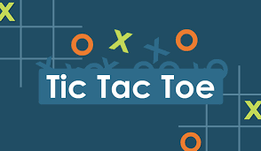

Latest Project



Hello and welcome! I'm Mikiyas Aregawi Bahre, a passionate computer science student.Through my journey in the world of technology, I am driven by a curiosity for innovation and a commitment to solving complex problems.
Join me as I showcase my projects and delve into the realm where code meets creativity. Whether you're here to explore, collaborate, or connect, I invite you to navigate through my portfolio and discover the possibilities we can create together.
Download CVHi there! I'm Mikiyas Aregawi Bahre, a dedicated computer science student with a keen interest in software development, algorithms, and data science. I have a strong foundation in programming languages such as Python, Java, and C++. My journey into computer science began with a fascination for how technology can solve real-world problems, and this passion continues to drive my learning and projects.
Throughout my academic career, I have worked on various projects that showcase my ability to design, develop, and implement efficient and innovative solutions. Whether it's building a web application, developing an algorithm, or analyzing data, I am always eager to take on new challenges and expand my skill set.
Thank you for visiting my website and getting to know me better. I hope you enjoyed reading my blog posts and found them useful and informative. If you want to read more of my posts, subscribe to my newsletter where I send weekly updates on web development trends and tips. If you have any feedback or suggestions, please let me know. I'd love to hear from you.
Read MoreAs a web developer, I specialize in creating dynamic and responsive websites that deliver a seamless user experience. With expertise in HTML, CSS, JavaScript, and popular frameworks like React and Angular, I build websites that are not only visually appealing but also highly functional. From front-end design to back-end development, I ensure every project is tailored to meet the specific needs of my clients, enhancing their online presence and engagement.
Read MoreI offer comprehensive Android app development services, crafting user-friendly and efficient mobile applications. With a strong command of Java and Kotlin, I develop apps that run smoothly on various Android devices. Whether it's a simple utility app or a complex enterprise solution, I focus on creating intuitive interfaces and robust functionality. My goal is to bring your ideas to life, providing users with an engaging and reliable mobile experience.
Read MoreHarnessing the power of data, I provide data analysis services to help you make informed decisions. Utilizing tools like Python, R, and SQL, I analyze and interpret complex data sets to uncover valuable insights. My services include data cleaning, visualization, and statistical analysis, all aimed at transforming raw data into actionable intelligence. Whether you're looking to optimize your business processes or understand market trends, I can help you leverage data to achieve your objectives.
Read More